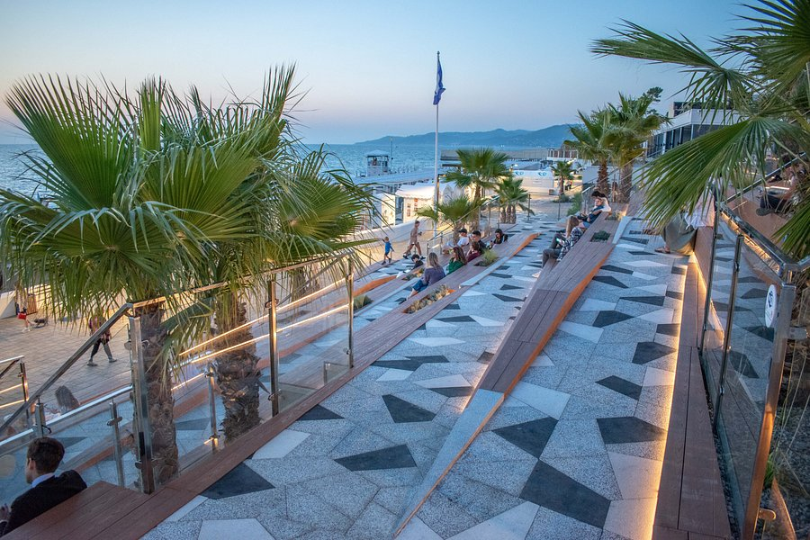
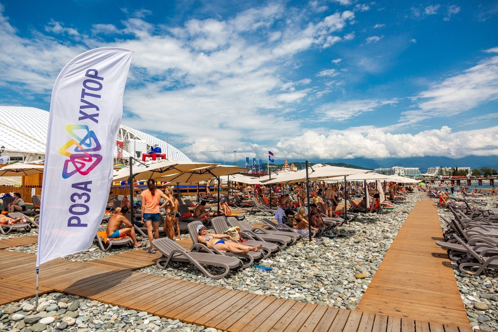

Пляжи города Сочи
Сочи — приморский курорт с великолепными пляжами на берегу Чёрного моря. От благоустроенных галечных пляжей в центре города до диких уединённых бухт в окрестностях. Общая протяжённость пляжей составляет более 40 км.
Сезон: май-октябрь
Температура моря: +20°C до +26°C
Тип пляжей: галечные и песчаные
Топ-3 пляжа

Пляж «Ривьера»
Центральный район | Благоустроенный | Инфраструктура
бесплатно | 4.6/5

Пляж «Маяк»
Центр | Морвокзал | Живая набережная
бесплатно | 4.5/5

Пляж «Роза Хутор»
Адлер | Горы и море | Современный
бесплатно | 4.7/5